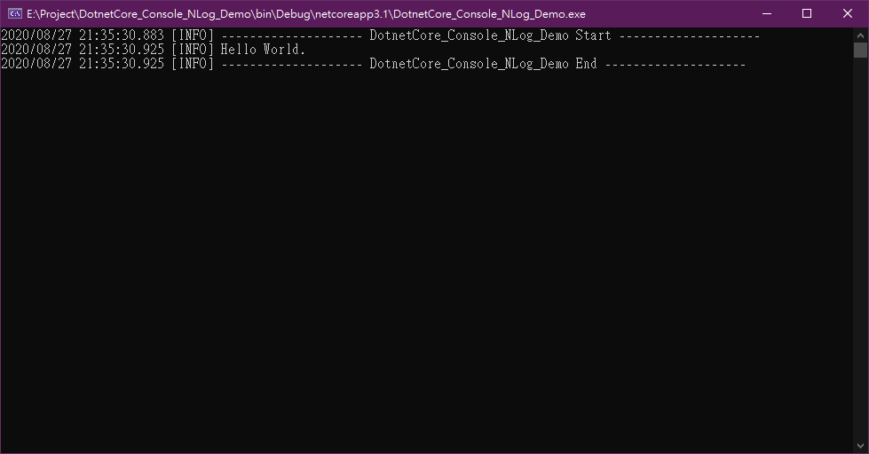
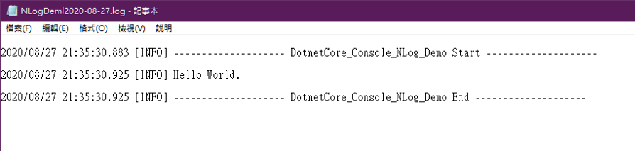

範例程式：https://github.com/s123600g/DotnetCore_Console_NLog_Demo
手動使用Microsoft Visual Studio建立.Net Core 3.1 Console專案。
appsettings.json{
"NLog": {
"autoReload": true,
"throwConfigExceptions": false,
"internalLogLevel": "info",
"internalLogFile": "${basedir}/logs/internal-nlog/internal-nlog.txt",
"targets": {
"logfile": {
"type": "File",
"fileName": "${basedir}/logs/NLogDeml${shortdate}.log",
"layout": "${date} [${uppercase:${level}}] ${message} ${exception}${newline}"
},
"logconsole": {
"type": "Console",
"layout": "${date} [${uppercase:${level}}] ${message} ${exception}"
}
},
"rules": [
{
"logger": "*",
"minLevel": "Debug",
"writeTo": "logfile,logconsole"
}
]
}
}
關於NLog設定參數可參考
要設定紀錄輸出目的端是在"targets" 在上面設定中，有兩種輸出目的端一種是寫入到記錄檔(File)，另一種是輸出至Console畫面視窗中(Console)。
"type" 輸出目的類型"fileName" 如果是輸出記錄檔，跟此設置有關"layout" 跟輸出顯示格式有關有關內容參數值可參考 https://nlog-project.org/config/?tab=layout-renderers
要設定輸出規則是在"rules"
"logger" 可以設置紀錄內容樣式匹配，可參考 Configuration-file#logger-name-filter"minLevel" 設置紀錄層級最低開始點，可參考Configuration-file#logger-level-filter"writeTo" 設置規則匹配紀錄要將內容輸出至哪一個目的端，可參考Configuration-file#rules
在專案目錄bin\Debug\netcoreapp3.1底下可以看到logs/目錄，NLog產生記錄檔放置在此目錄底下

初步建置過程碰到下面問題，筆記解決方式
嚴重性 程式碼 說明 專案 檔案 行 隱藏項目狀態
錯誤 CS1061 'IConfigurationBuilder' 未包含 'AddJsonFile' 的定義，也找不到可接受類型 'IConfigurationBuilder' 第一個引數的可存取擴充方法 'AddJsonFile'(是否遺漏 using 指示詞或組件參考?) DotnetCore_Console_NLog_Demo E:\Project\DotnetCore_Console_NLog_Demo\Program.cs 16 作用中
根據 https://stackoverflow.com/a/27382878，在Nuget加入此套件 → Microsoft.Extensions.Configuration.Json